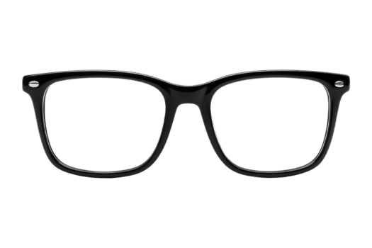

แตะหน้าจอ 1 ครั้ง
เพื่อเปิดระบบภาพและเสียง
⏳ กำลังเชื่อมต่อระบบควบคุม...
SNAPSHOT STUDIO
ระบบตรวจจับท่าทางและ AR ฟิลเตอร์
5
👋
ปัดซ้าย / ขวา
เปลี่ยนกรอบรูป
👌
ท่า OK (จีบนิ้ว)
เปิด/ปิด AR โหมด
✌️
ชู 2 นิ้ว
เพื่อถ่ายภาพ
สแกนเพื่อดาวน์โหลดภาพ!
รอ
15
วินาที